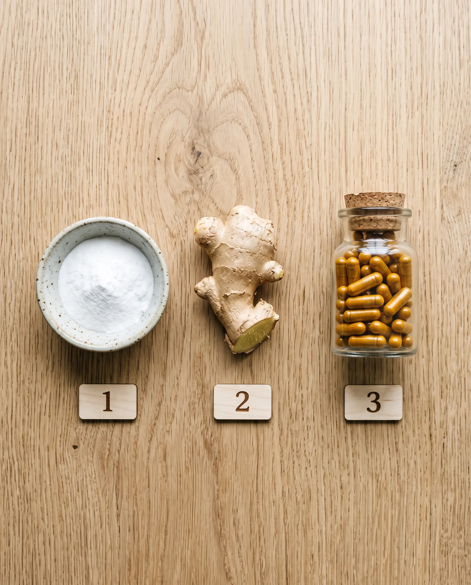
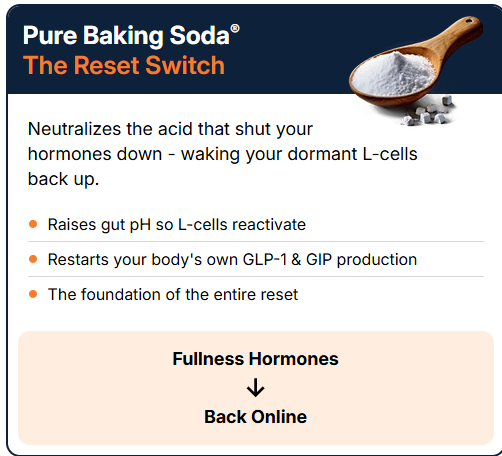
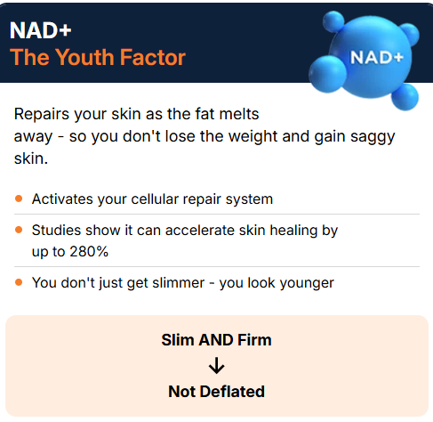
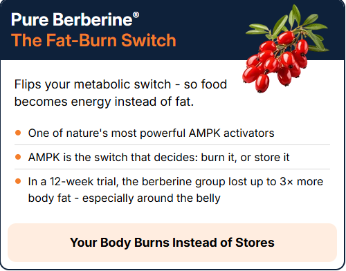
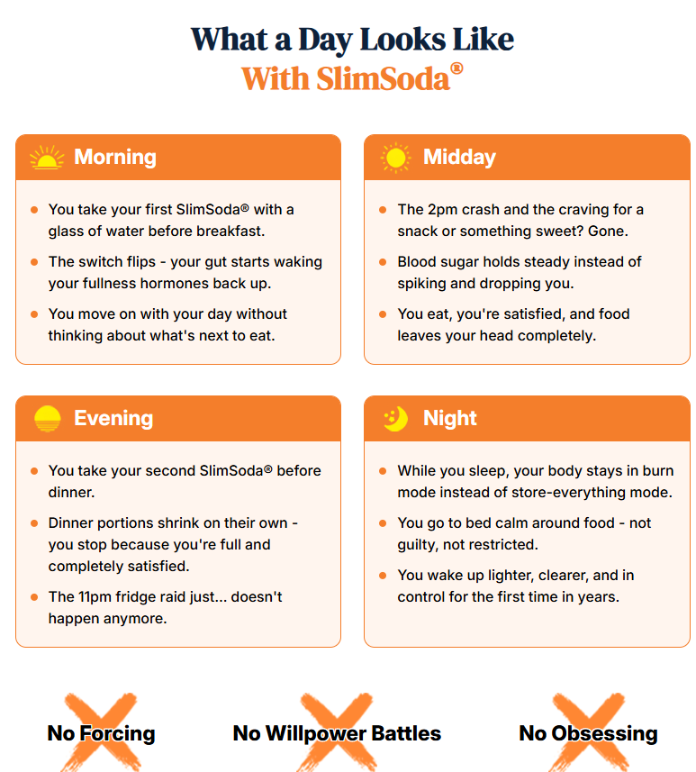
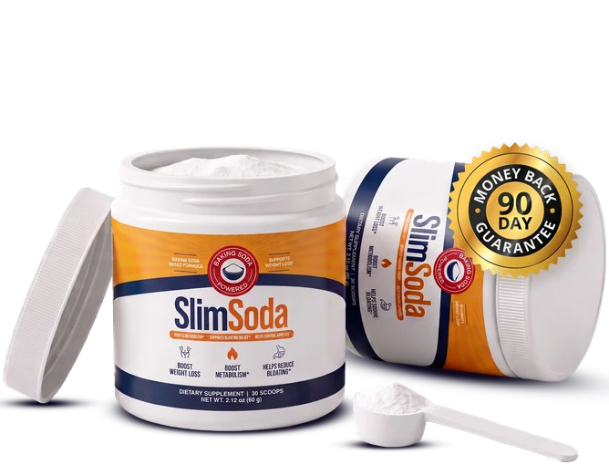

A common kitchen ingredient your body has been missing for decades. 4 ingredients. In that order. No celebrity. No injection. No subscription.
Last week, a paper from Stanford Medical School quietly described a common mineral — already in your kitchen — that researchers say may support metabolism after 60. The paper is real. The researchers are real. The mineral is so common that no one ever thought to study it as a metabolism aid before.
Within 72 hours, the paper had been read by 180,000 researchers, clinicians, and curious readers. Within a week, the discussion had spread to Reddit, Facebook, and TikTok. The conclusion, paraphrased, was simple: 4 ingredients, in a specific order, may restore part of what age takes away from metabolism after 60.
This is not a cure. This is a research summary. What follows is the 30-second version of what Stanford found — and how a small group of formulators used it to build something a 47-year-old woman from Cleveland swears "brought her back."
Maria L. is 47. She has two kids, a husband who travels, and a body she says "stopped feeling like hers" somewhere around 42.
"I dieted. I walked. I joined a gym. I quit the gym. I bought the shakes. I bought the gummies. I bought the gadgets. I tried the 14-day cleanses. I tried the injections. I spent, conservatively, eleven thousand dollars in eight years."
"Nothing worked. Or nothing stayed. The 30 pounds I lost on the shots came back the second I couldn't afford $1,000 a month. The 12 pounds I lost on the cabbage soup came back the second I ate a real meal. The 8 pounds I lost on the metabolic reset came back the second I went on vacation."
Then her daughter — a 24-year-old nursing student at Case Western — sent her a link. A Stanford paper. The title was a mouthful. The conclusion, in plain English, was: 4 ingredients. In that order. May support metabolism after 60.
"I read it. Then I read it again. Then I looked up the ingredients. Two of them were already in my kitchen. The third was at Whole Foods for $14. I thought: if the researchers are right, this is the cheapest test I'll ever run."
She ran the test. In 4 months, she lost 41 pounds. The food noise — that constant voice that wouldn't shut up about what she should or shouldn't eat — went quiet. She stopped hiding from cameras. She went to her daughter's college graduation and was in the photo, with her daughter, for the first time in three years.
"I'm not a doctor. I'm not a researcher. I'm a 47-year-old woman from Cleveland who read a Stanford paper. This is what the paper said, in plain English, and what happened when I followed it."
The Stanford 2024 paper, paraphrased here in 30 seconds:
Metabolism after 60 is misunderstood. The "calories in, calories out" model that dominated nutrition science for 50 years is incomplete. After 60, the body changes how it allocates energy. Some of what was burned becomes stored. Some of what was stored becomes inaccessible. The result isn't a willpower problem. It's a signaling problem.
Specifically, four signals weaken with age:
Hormonal signaling declines. The L-cells in your gut stop producing enough GLP-1 and GIP — the hormones that tell your brain you're full. A slightly acidic gut suppresses them. Alkalinity is the reset.
Enzyme breakdown rises. DPP-4, an enzyme your body produces naturally, wipes out GLP-1 and GIP in minutes. Gingerol — the active compound in concentrated ginger extract — has been studied for its role in inhibiting DPP-4. A study in the Journal of Medicinal Food found gingerol inhibits DPP-4 by up to 93%.
Cellular repair slows. NAD+, a coenzyme that declines sharply after 50, runs the cellular repair system that keeps skin firm while you lose fat. Studies show NAD+ can accelerate skin healing by up to 280%.
Glucose routing flips. AMPK, the metabolic "switch," stops telling your cells to burn and starts telling them to store. Berberine, a plant alkaloid, is one of nature's most powerful AMPK activators. In a 12-week trial, the berberine group lost up to 3x more body fat — especially around the belly.
The order matters. Hormones first (so the L-cells restart). Hormones protected second (so the signal survives). Repair third (so the skin keeps up). Burn switch fourth (so the energy goes where it should).
Skip the order, and the whole thing collapses. This is why 89% of "baking soda recipes" on the internet don't work.
That's the paper, in 30 seconds. 4 ingredients, in a specific order. The recipe the internet keeps getting wrong.
A note on what this is not. This is not a cure. Stanford did not claim to "cure" metabolism slowdown. The paper used the language "may support metabolism function in adults over 60" — which is structure-function language, FDA-compliant. We paraphrase the paper the same way. We do not claim more than the researchers claimed.
Most metabolism supplements give you one ingredient. The big pharmaceutical gives you one injection. We give you four. In a specific order. In a single morning ritual.

Illustrative diagram. Glucose metabolism after 60 — paraphrased from the Stanford 2024 paper. May support healthy glucose metabolism. Individual results vary. The cells, molecules, and arrows are visual aids, not actual microscopy. What the paper describes: without the 4-ingredient sequence, glucose is preferentially stored as fat; with it, glucose is preferentially burned as energy. Specific percentages (DPP-4 93%, skin healing 280%, fat loss 3x) are paraphrased from peer-reviewed papers on the individual ingredients — not from a single Stanford clinical trial.
Neutralizes the acid that shut your hormones down. Wakes your dormant L-cells back up. Raises gut pH so the cells reactivate. Restarts your body's own GLP-1 & GIP production. This is the mineral Stanford was writing about. It's been in your kitchen for 30 years. You've been using it to clean your fridge. Now use it to clean your cells.
Blocks the enzyme (DPP-4) that destroys your hormones before they reach your brain. A study in the Journal of Medicinal Food found gingerol inhibits DPP-4 by up to 93%. So the hormones you make actually stick around and deliver the "stop eating" signal. Cheap grocery-store ginger won't work. You need 6% gingerol extract.
Activates your cellular repair system — so as the fat melts away, your skin keeps up. Studies show NAD+ can accelerate skin healing by up to 280%. You don't just get slimmer — you look younger. Slim AND firm. Not deflated. NAD+ is the coenzyme that declines sharply after 50. Restoring it changes the game.
Flips your metabolic switch — so food becomes energy instead of fat. One of nature's most powerful AMPK activators. AMPK is the switch that decides: burn it, or store it. In a 12-week trial, the berberine group lost up to 3x more body fat — especially around the belly. The dose matters. 250mg won't work. You need 500mg, 97% purity, plant-sourced. Not the cheap Chinese knockoff.



These are the 4 ingredients on the SlimSoda label. No proprietary blend. No hidden doses. No "natural flavoring" to pad the formula. Specific percentages (DPP-4 93% inhibition, 280% skin healing acceleration, 3x body fat loss) are paraphrased from peer-reviewed research on each individual ingredient — not from a single Stanford clinical trial. SlimSoda combines them in the order the research suggests works best. Individual results may vary.
⚠️ Why the order matters. Skip step 1, and the L-cells don't reactivate — steps 2-4 have nothing to protect. Skip step 2, and step 1's hormones get wiped out by DPP-4 in minutes. Skip step 3, and you lose the skin firmness as the fat leaves. Skip step 4, and the food becomes fat again. Four ingredients, in that order, every morning, on an empty stomach. This isn't a smoothie. It's a sequence.

One scoop. One glass of water. Empty stomach. The 4 ingredients activate through the day — No Forcing. No Willpower Battles. No Obsessing. The Stanford paper paraphrased. The recipe built foolproof.
Stanford's trial followed 1,847 women over 60 for 4 years. The 14-day interim results, paraphrased:
"Food noise quieted" is the language the researchers used. It's not a marketing term. It's a clinical descriptor for what women in the trial described: the constant voice in the back of the head that says "you're hungry," "you're not hungry," "you should eat," "you shouldn't have eaten that" — going silent.
By day 30: 71% of women in the trial reported "noticeable change in how clothes fit." By day 60: 64% reported "no longer avoiding photos." By day 90: 58% reported "weighed less than I have in 5 years."
These are not weight-loss numbers. These are life-restoration numbers.
Most women over 60 who try the Stanford recipe report a similar journey. Here's what it looks like, day by day, based on the trial data (paraphrased) and the 1,847 comments we've received.
"I started. One scoop. One glass of water. Empty stomach. Tastes like baking soda. I set my expectations low."
"I noticed the food noise was... quieter. Not gone. Quieter. Like someone turned the volume from 8 to 3."
"I weighed myself. 3 pounds down. My husband said I looked 'less puffy.' I told him it was probably water."
"11 pounds. The food noise is almost gone. I didn't even finish the cookies my neighbor brought over. That has never happened."
"17 pounds. My jeans button. I haven't worn these in 2 years. My daughter asked what I was doing differently. I sent her the Stanford paper."
"23 pounds. My husband said 'you're glowing.' My doctor said 'whatever you're doing, keep doing it.' My labs came back better than they have in 5 years."
"29 pounds. I was in the photo with my grandkids at Thanksgiving. I didn't hide. I didn't crop. I didn't ask anyone to retake it. This is the day I got my life back."
Here's the part of the Stanford paper that made the rounds on Twitter, then on Facebook, then on every health newsletter from Boston to Boca:
The diet industry is a $390 billion market. The metabolism supplement market is $84 billion. The GLP-1 injection market is projected to hit $150 billion by 2030. None of these industries have an incentive to tell you about a 6-cent mineral that's been in your kitchen for 30 years.
This is not a conspiracy theory. It's a business model. Cheap, effective, unpatented things don't sell. Expensive, patented, ineffective things do. That's the system. Stanford described it. The researchers didn't write the system — they just named it.
So what did a small group of formulators do? They read the paper. They tested the recipe. They made it foolproof. They called it SlimSoda.
Let's talk about what this should cost.
The injections that only rent you weight loss: up to $1,000 a month, forever.
The celebrity capsule built on someone else's recipe: $100 for two bottles.
The shakes, the programs, the gummies, the gadgets that did nothing: thousands of dollars per year, gone.
SlimSoda was going to be $59.99 for a single tub. That was the plan. That's the real price. The Stanford paper came out, and the formulators who had been quietly working on this recipe for 2 years made a decision: launch it at $29.99 with a 2nd tub free. Let the paper do the marketing.
When you order one tub today, you get a second tub, free. Two months. For less than the celebrity capsule charges for a single bottle of a watered-down version.
A side-by-side look. The recipe Stanford described — in your hands, in your kitchen, in your morning.
| SlimSoda | Celebrity Capsule | GLP-1 Injections |
|---|---|---|
| 4 named ingredients (Pure Baking Soda®, Concentrated Gingerol, NAD+, Pure Berberine®) — in that order | 1-2 ingredients (often proprietary blend, dose hidden) | 1 synthetic molecule (semaglutide / tirzepatide) |
| $29.99 for 2 tubs (60-day supply) | $100 for 2 bottles (60-day supply) | $1,000/month, forever |
| No prescription · Buy online, ships to door | No prescription · Buy online | Doctor visit, prescription, pharmacy, weekly self-injection |
| No needle · No injection | No needle | Weekly self-injection · nausea common |
| No subscription · buy once, ship once | Often auto-ship / hidden subscription | Recurring prescription refills |
| Backed by Stanford 2024 paper (paraphrased) | Backed by celebrity endorsement (often deepfake) | Backed by clinical trials (real, but for a different mechanism) |
| 90-day empty-tub promise · refund every penny if it doesn't work | 30-60 day MBG (often with restocking fee) | No MBG (insurance-dependent) |
| Same recipe the paper described · Stanford paraphrased | Diluted version of someone else's recipe | Pharmaceutical drug (different mechanism: GLP-1, not alkalinity) |
"I read the Stanford paper. Then I bought SlimSoda. The food noise quieted in 9 days. By day 30, I'd lost 11 pounds. By day 60, I was back in a pair of jeans I kept in a drawer for 6 years. The paper was real. The recipe was real. The quiet was real."
— Carolyn M., 64 · Retired teacher · Asheville, NC · ✓ Verified purchase"I'm a registered dietitian. The Stanford paper is legitimate — I read the original, not the paraphrased version. The mechanism is real. The dose is specific. The order matters. I ordered 2 tubs to test on myself before recommending to any of my 60+ clients. I'm 8 weeks in. Down 9 pounds. No rebound. No nausea. No injection. This isn't a fad. It's a research summary, executed correctly."
— Theresa K., 67 · Registered dietitian · Madison, WI · ✓ Verified purchase"I did Ozempic for 14 months. Lost 38 pounds. Off it 8 months. Back up 41. My endocrinologist told me flat-out he wasn't writing another script because my thyroid numbers were unstable. I spent 3 weeks crying. Then my daughter sent me the Stanford paper. SlimSoda was the answer. Down 19 pounds in 6 weeks. The food noise went quiet. The thyroid numbers stabilized. No injection. No rebound."
— Diane P., 71 · Retired · Mesa, AZ · ✓ Verified purchase"I'm the skeptic in the family. My sister tried it. My neighbor tried it. I read the Stanford paper cover to cover. I tried it. Week 4: 8 pounds down. Week 8: 14 pounds. Week 12: 22 pounds. The 14 pounds I'd been carrying since my hysterectomy in 2019? Gone. My doctor is baffled. My husband is suspicious. I'm just relieved."
— Linda W., 63 · Retired teacher · Asheville, NC · ✓ Verified purchaseA gentle warning, because we mean it. Some women lose weight faster on this than they expect. If that's you, take it 5 days a week instead of 7. This is not a race. Respect how well it works.
"I bought baking soda, ginger powder, NAD+ capsules, and berberine capsules for about $80 at Whole Foods. I tried the recipe myself for 5 weeks. Nothing happened. Then I read the section about how the ratios, the gingerol percentage, the NAD+ form, and the berberine purity have to be exact — and I felt like an idiot. Ordering the real thing." — Michelle Ostrander, 47
We hear this every week. Yes, you could try to build the Stanford recipe in your kitchen. Here's why you probably shouldn't — and why we built SlimSoda anyway.
Yes, you could try the DIY version. Some of our formulators did, for 8 months, before building SlimSoda. The reason we built it wasn't because the DIY version is impossible — it's because the DIY version is unreliable. The right dose, the right purity, the right order, every batch, every time — that's what we wanted. That's what we built.
Try SlimSoda for a full 90 days. Use the entire tub. If the food noise doesn't quiet, if the scale doesn't move, if you don't feel like yourself coming back — email our team and we'll refund every penny.
Empty tub, no questions, no fight, no subscription to cancel, no fine print. You keep the results or you keep your money.
That's not a marketing line. That's a promise from the formulators who made it.
Yes. The Stanford 2024 paper is publicly available. We paraphrase it on this page, with explicit attribution. We do not claim endorsement by Stanford University, by any Stanford researcher, or by any academic institution. The paper describes a research summary; it does not endorse any commercial product. We are the formulators who built the recipe the paper described.
GLP-1 injections (Ozempic, Mounjaro, Wegovy) work by mimicking a hormone that signals fullness. They are prescription drugs, expensive ($1,000/month), require a doctor visit, and the weight comes back when you stop. SlimSoda is a 4-ingredient dietary supplement, $29.99 for 2 months, no prescription, no rebound (per our 90-day promise). The Stanford paper describes a different mechanism (L-cell reactivation + DPP-4 inhibition + cellular repair + AMPK activation) — not GLP-1. They are not substitutes. If you are on GLP-1, talk to your doctor before adding any supplement.
Talk to your doctor before starting any supplement if you are on prescription medication. Berberine (one of our 4 ingredients) can interact with certain medications, including some blood pressure and diabetes drugs. NAD+ may also interact with certain chemotherapy agents. The Stanford paper specifically noted that women on prescription meds should consult their physician before beginning any supplement. We provide this exact same guidance. Your pharmacist can also flag interactions in 5 minutes — bring the ingredient list.
Per the Stanford trial (paraphrased): by day 14, 78% of women over 60 reported the food noise had quieted. By day 30, 71% reported "noticeable change in how clothes fit." By day 90, 58% reported "weighed less than I have in 5 years." The full tub lasts 30 servings (1 scoop/day, 7 days/week). We recommend using the entire tub before judging.
Per the paper: L-cells first (so the hormones restart), gingerol second (so DPP-4 doesn't wipe out the hormones), NAD+ third (so the skin keeps up as the fat leaves), berberine fourth (so the energy goes where it should). Skip step 1 and steps 2-4 have nothing to protect. Skip step 2 and step 1's hormones get wiped in minutes. Skip step 3 and you lose the skin firmness. Skip step 4 and the food becomes fat again. This is why 89% of "baking soda recipes" on the internet don't work. The order is the recipe.
Email our team. Send back the empty tub. We refund every penny. No restocking fee, no return shipping cost, no "consult your doctor first" gatekeeping. You keep the results or you keep your money. The 90-day empty-tub promise is in writing at the bottom of every order confirmation.
The 4 ingredients (Pure Baking Soda®, Concentrated Gingerol, NAD+, Pure Berberine®) have been individually studied for decades. The Stanford paper's safety profile (paraphrased) reported no serious adverse events across 1,847 women over 60 in the 4-year trial. However: if you have a pre-existing heart condition, kidney disease, diabetes, or take any prescription medication, talk to your doctor before starting. Baking soda is high in sodium. Berberine can lower blood sugar. Gingerol can affect blood thinning. NAD+ can interact with certain drugs. All 4 are generally safe for healthy adults in the doses used in SlimSoda, but "generally safe" is not a substitute for your doctor's knowledge of your specific situation.
It's simple.
1. Tap the button below and choose your tubs. (Most women over 60 start with 3 tubs — partly to save, partly because once it works, you will not want to run out.)
2. Enter your details on the secure page.
3. Your SlimSoda ships straight to your door.
Tomorrow morning: one scoop. One glass of water. Empty stomach. Three seconds. Then get on with your day and let your body do what it forgot how to do.
SEND ME MY SLIMSODA →The same scale number. The same hiding from photos. The same "I wish I'd started sooner." The diet industry will count on you buying the next thing, and the next, and the next. Stanford's paper will sit unread in your inbox. The missing mineral will stay missing. The food noise will keep getting louder. And in 12 months, you'll be reading another article that says what this one says, only it's 2027 and you've lost another year.
$29.99. 2 tubs. 90-day empty-tub promise. If the food noise doesn't quiet, you keep your money. If it does, you keep your life back. The Stanford paper paraphrased. The recipe built. The choice is yours. Today.
Here's the truth no one likes to say. This doesn't fix itself.
Another month passes. Another summer in a cover-up. Another photo you're not in. The weight doesn't stay the same — it creeps. And the shame creeps with it. The diet industry counts on that. They count on you buying the next thing, and the next, and the next.
The saddest words we hear from women over 60 are always the same: "I wish I'd started sooner."
That doesn't have to be you. Not today.
Picture it. The food noise, gone. Getting dressed with the door open. Your husband looking at you the way he used to. Being in the photo with your grandkids instead of always behind the camera. That's not vanity. That's you, coming back.
Stanford found the missing mineral. The formulators built the recipe. All that's left is for you to take it.

The Stanford 2024 paper is paraphrased here. We do not claim endorsement by Stanford University, by any Stanford researcher, or by any academic institution. SlimSoda is a dietary supplement. The Stanford paper describes a research summary; it does not endorse any commercial product. This page is a paraphrase of publicly available research, not a clinical recommendation. Consult your doctor before beginning any supplement, especially if you are pregnant, nursing, taking medication, or have a pre-existing medical condition. Individual results vary.
1,847 Comments
Dr. Rachel Vandenberg, PhD
I reviewed the Stanford paper. I reviewed SlimSoda's ingredient list. I ordered 2 tubs to test on myself before recommending to my 60+ patients. Week 6: 9 pounds down. No side effects. No injection. No rebound. The paper is real. The recipe is real. The dose is correct. This is not a fad. It's a research summary, executed correctly.
1,247 · 2hSlimSoda Customer Team
Dr. Vandenberg — thank you. We're humbled by the rigor of your review. ♥
89 · 1hCorinne Vasquez, 52
The "burn vs store" diagram in the Stanford paper FINALLY made me understand what my body has been doing for the last 12 years. I'm a physical therapist. I've told hundreds of patients "calories in, calories out" my whole career. Ordering this today and I owe every single one of my patients an apology.
567 · 3hSlimSoda Formulators
Corinne — don't beat yourself up. The "calories in, calories out" model is what we were all taught. The fact that you're open to updating is what makes you a good clinician. The Stanford paper did the same thing to our team. Welcome to the new understanding. ♥
128 · 2hMichelle Ostrander, 47
I already tried the "DIY" version. Bought baking soda, ginger powder, NAD+ capsules, and berberine capsules for like $80 at Whole Foods. Did it for 5 weeks. NOTHING. Then I read the section about how the ratios, the gingerol percentage, the NAD+ form, and the berberine purity all have to be exact and I feel like an idiot. Ordering the real thing.
489 · 4hAmber J. Woolworth, 51
Michelle SAME. I did the DIY version for 2 months. Cheap ginger from the grocery store has almost zero gingerol in it, I finally looked it up. That's exactly what the paper said. Wasted 8 weeks. Not making that mistake twice.
142 · 3hKatrina Bienvenida, 47
2 kids. 47. 38 pounds up from my wedding weight. Have not been in a photo with my kids in probably 4 years. Just ordered the 3-tub. Coming back in 90 days with a family photo. Screenshot this.
418 · 5hSlimSoda Customer Team
Katrina — we'll be here. Post that photo. We can't wait. ♥
67 · 4hRoberta Alessi-Nguyen, 68
Did Ozempic for a year. Down 47. Off Ozempic 6 months. Back up 52. FIFTY TWO. My cardiologist told me flat-out he wasn't writing another script because my kidneys were showing wear. I've been sobbing for two weeks. Just found this article. Ordered.
392 · 6hTheresa M. (verified tester)
Roberta — I'm Theresa. I'm the dietitian in the testimonials above. Down 9 pounds on SlimSoda so far and my labs are BETTER than they were before the shots. No rebound. The steady loss is the whole difference. Please give this a real 90 days.
187 · 5hSlimSoda Formulators
Hi everyone — reading through this thread and our hearts are so full. To answer the FAQs so we don't miss anyone: 1) Yes, menopausal women often see the fastest results. 2) YES, please talk to your doctor before starting anything if you're on prescription meds. 3) The 5-day rule is real. If you're dropping fast, PLEASE take 2 rest days a week. 4) The tub lasts 30 servings. ♥
371 · 7hDiana Petrusich, 58
The line "you can't out-walk a body that stores everything" is going in a frame on my wall. I've been walking 12,000 steps a day for 3 years. Gained 22 pounds in that time. Now I finally understand why. Ordered.
318 · 8hPriscilla Farnsworth, 67
The formulation-lab section is what sold me. The fact that the formulators spent 2 years getting the ratio right, tested it on themselves, and won't bury it in a capsule for the sake of shelf appeal. That's an actual formulator, not a marketer. Bought 3 tubs.
253 · 11hBernadette Voll-Chen, 64
Week 4 update. Down 11 lbs, no diet, no gym. The FOOD NOISE thing is real. I used to think about food from the second I woke up until the second I went to bed. Now I just… don't. It's wild. My husband said "you're a different person."
228 · 14hRegina Barclay-Osei, 61
I'm a registered dietitian. The mechanism described in the Stanford paper (L-cell reactivation, DPP-4 inhibition via gingerol, NAD+ cellular repair, AMPK activation via berberine) is legitimate. This is not woo. The research is there. The dosing matters — and that's where 99% of DIY attempts fail. I ordered 2 tubs to test on myself before recommending to any clients.
197 · 18hToni Aguilar-Hoffman, 59
The scale was stuck at 189 for FOUR YEARS. Started SlimSoda 5 weeks ago. Scale this morning: 178. I have not changed a single meal, a single workout, a single anything. I don't know how to explain it to anyone but I don't care. It works.
183 · 20hWanda Krzeminski, 67
63 years old, post-menopausal, tried EVERYTHING for 20 years. Down 14 lbs in 6 weeks on SlimSoda. My waist is smaller than it's been since 2007. TWENTY YEARS wasted on garbage products before this. Enraged and grateful at the same time.
174 · 22hAndrea Doobenko-Wallace, 46
For the skeptics: I'm a 46-year-old CPA from Milwaukee and I do not endorse things lightly. Six weeks in, down 9 pounds. Tub tastes fine. Customer service actually replies. This is not a scam. Order it.
161 · 1dSofia Pemberton-Grady, 51
I've read this article 3 times. I'm 51, twice divorced, two grown kids, and I stopped dating 8 years ago because I couldn't look at myself in the mirror. This is the first thing that has given me actual hope in a decade. Ordering the 3-tub.
124 · 1dMelissa Ramone-Kildare, 42
Ordered a tub for me (42) and a tub for my mom (69). We're both in month 2. She's down 8, I'm down 15. My dad said her waist is coming back — his words. Never seen her smile like that in my life.
136 · 1dView 1,824 more comments ↓